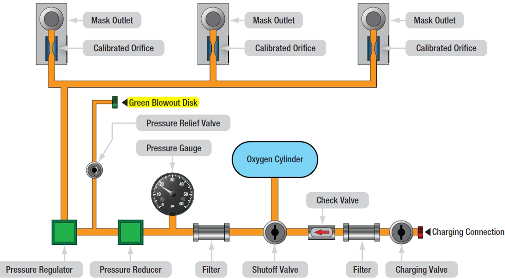

Oxygen Systems
Supply Regulation, Indication & Maintenance
Part 2 Revision Guide — CLO 4. Covers system types, regulation principles, indication methods, and maintenance procedures.
- Simple design
- Reliable operation
- Common in smaller aircraft
- Wastes oxygen during exhalation
- Shorter oxygen duration
| Type | How It Works |
|---|---|
| Manual | Crew adjusts oxygen flow manually as altitude changes |
| Automatic | Uses an aneroid device that automatically increases flow as altitude increases |
Rebreather masks capture exhaled oxygen that is still usable, store it in a bag or reservoir, and allow it to be inhaled again — reducing O₂ waste.
- Masks stored in overhead Passenger Service Units (PSUs)
- Cabin depressurization automatically deploys masks
- Pulling the mask activates oxygen flow
- Masks fit snugly but are not airtight — allow cabin air mixing via vent holes

4.2.1 Diluter-Demand System
- Delivers oxygen only during inhalation
- Mixes oxygen with cabin air automatically
- As altitude increases → more oxygen, less cabin air mixed in
- At approximately 34,000 ft → supplies nearly 100% oxygen
- Pilot can manually select 100% oxygen
- Or select emergency continuous-flow oxygen
4.2.2 Pressure-Demand System
Operates like a diluter-demand system, but oxygen is delivered under positive pressure — forcing oxygen into the lungs.
- At very high altitude, normal breathing pressure becomes insufficient
- Pressurized oxygen ensures proper blood saturation
- Used above approximately 40,000 ft
- Common in airliners and high-performance aircraft
4.2.3 Cockpit Oxygen System Layout
- Remotely mounted oxygen cylinders
- Pressure reducer
- Shutoff valve
- Distribution tubing
- Individual crew regulators
- Crew oxygen masks
- Turn system on/off
- Select oxygen mode
- Monitor oxygen pressure
- Transport aircraft: crew and passenger systems are typically separate
| Feature | Diluter-Demand | Pressure-Demand |
|---|---|---|
| Delivery | On inhalation only | On inhalation under positive pressure |
| Air mixing | Mixes O₂ with cabin air | Same, but delivered under pressure |
| Altitude | Up to ~34,000 ft | Above ~40,000 ft |
| Application | General aviation / commercial crew | Airliners / high-performance aircraft |
Pulling the mask down fires a firing mechanism that ignites the chemical generator. Oxygen production begins immediately.
- Once activated, cannot be stopped
- Entire generator must be replaced after use
- Provides oxygen for approximately 10–20 minutes
- Sufficient time for emergency descent
- Lightweight
- Compact
- Minimal maintenance
- Long shelf life
- Cannot be stopped once activated
- Full generator replacement required after each use
- Detects inhalation electronically
- Releases oxygen in timed pulses
- Automatically adjusts delivery with altitude
- Available as portable or permanently installed units
Most EDS units include an emergency bypass for continuous flow if electronics fail — ensuring uninterrupted oxygen supply.
- Stores oxygen in liquid form
- Converts to gaseous oxygen before delivery
- Requires special insulated containers
- Includes heat exchange assemblies for gas conversion
- Fitted with pressure relief protection
High-pressure systems include relief valves and blowout disks to release excess pressure safely.
- Most blowout disks are green
- If the disk is missing → the relief valve may have opened
5.1 Flow Indicators
Flow indicators confirm that oxygen is actually flowing to the user.
- Moving pith balls
- Blinking indicators
- Adjustable flow meters
They provide quick confirmation that the system is operating correctly.
5.2 Pressure Indications
Cylinder pressure indicates remaining oxygen quantity. Sources include:
- Direct gauges — on the cylinder or panel
- Electrical transducers — remote sensing
- Multifunction cockpit displays — integrated indication
5.3 Pulse Oximeters
Portable pulse oximeters measure blood oxygen saturation and heart rate. Pilots may use them to monitor oxygen needs and detect early signs of hypoxia.
- Green blowout disk missing = overpressure event → investigate before flight
- Flow indicators confirm oxygen is reaching the user
- Cylinder pressure = remaining quantity (gauge, transducer, or MFD)
- Pulse oximeters monitor blood O₂ saturation and heart rate
6.1 Leak Testing
- Use oxygen-safe leak detection fluid only
- Bubble formation indicates leakage at a fitting or connection
- Never overtighten fittings — use proper torque
- Replace damaged fittings
- Depressurize the system before performing any repairs
6.2 Draining an Oxygen System
- 1Close the cylinder valve
- 2Allow oxygen to flow from masks or outlets
- 3Drain remaining pressure safely
6.3 Purging an Oxygen System
Purging removes moisture, contaminants, and air introduced during maintenance.
- Freeze at altitude — blocking valves and regulators
- Cause corrosion of system components
- Run oxygen through the system for several minutes
- Restore oxygen saturation inside the system
- Final purge must always use pure oxygen
6.4 Inspection of Masks and Hoses
- Leaks, holes, and cracks
- Damaged straps
- Faulty microphones
- Cleanliness — free from petroleum contamination
- Protect both eyes and respiratory system
- Include built-in microphones
- Connect to demand regulators
6.5 Replacement of Tubing, Valves, and Fittings
All oxygen components must be clean, dry, and free from oil or grease — contamination is a serious fire hazard.
Non-petroleum cleaners such as acetone and trichloroethylene may be used — follow manufacturer procedures.
- Only oxygen-compatible sealants may be used
- Teflon tape may be used carefully — start at least two threads from the end
6.6 Oxygen System Safety
- No smoking within 50 ft of oxygen systems
- Keep away from oil, grease, and fuel at all times
- Use clean, oxygen-compatible tools and equipment
- Work in ventilated areas
- Use only approved oxygen-compatible materials
- Keep protective caps installed when not connected
- Open valves slowly
- Perform pressure and leak checks after all maintenance
- Store in cool, ventilated areas
- Away from heat sources
- Away from petroleum products
- I can explain the difference between continuous-flow and demand-flow systems
- I understand how a diluter-demand regulator adjusts oxygen with altitude
- I can state why a pressure-demand system is needed above ~40,000 ft
- I know how a chemical oxygen generator is activated and its duration (10–20 min)
- I can explain what a missing green blowout disk means and the required action
- I understand the three methods of pressure indication (gauge, transducer, MFD)
- I know why pulse oximeters are used by pilots
- I can describe the leak detection procedure and tool used
- I understand why oxygen systems must be purged and the danger of moisture
- I know the high-pressure hazard (up to 1,850 psi) and the depressurization rule
- I can list the critical oxygen safety rules (50 ft no-smoking, no oil/grease, etc.)
- I understand the Teflon tape rule (start at least 2 threads from the end)
- I know which cleaning agents are approved for oxygen system components
- I can identify all components in the continuous-flow system layout diagram